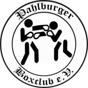
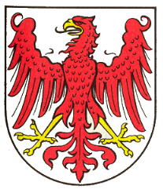
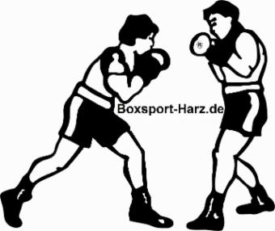

Pahlburger Boxclub e.V. (Amateur-Boxsport)
 
Internationale und nationale herausragende Leistungen der aktiven Sportler des Vereins
( !! weiter unten in dieser Rubrik !! )
Trainingsstätte:
Neue Trainingshalle in der ehemaligen Kaufhalle im Ortszentrum Deersheim, 38835 Osterwieck OT Deersheim
Der Verein ist laut EU-Fonds Sachsen-Anhalt (30.01.2020) von der früheren Halle in Dardesheim (Hinterm grünen Jäger 211 C) nach Deersheim umgezogen. Der Pahlburger BC e.V. ist weiterhin Mitglied im Boxverband Sachsen-Anhalt. Webseite: pahlburger-boxclub.de (am 18.10.2026 im Wartungsmodus).
Trainingszeiten:
Montag und Mittwoch von 18.00 - 19.30 Uhr
Stand: Trainingszeiten und Ansprechpartner aus 2014 – bitte aktuell beim Verein erfragen.
Ansprechpartner:
M. Borchers und P. Kaczmarek (qualifizierte Iizenzierte Fachtrainer für den Boxsport, aktuell Amateur-Lizenz)
Die Beiträge sollten beim Verein direkt erfragt werden.
Archiv: Die Erfolgsgeschichte des Vereins (Stand 2014)
2014 S. Krüger 1. Platz bei den Landesmeisterschaften in Sachsen/Anhalt
2013 P. Kaczmarek 1. Platz bei den Landesmeisterschaften in Sachsen/Anhalt
2013 T. Ptasczynski 1.Platz bei den Landesmeisterschaften in Sachsen/Anhalt
2013 T. Klatt 1. Platz bei den Landesmeisterschaften in Sachsen/Anhalt
